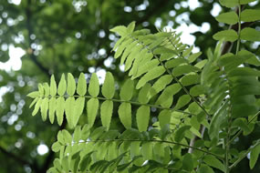
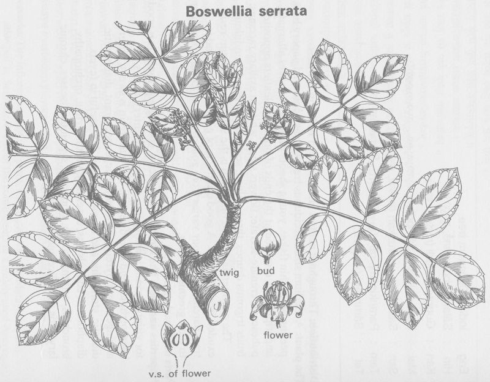

|
ECONOMICALLY
IMPORTANT PLANTS OF INDIA |
| Under-utilized Food and Fodder species and their wild relatives | Contributed by Ms.M.L Annapurna And Dr. Dhanapal, UAS, Bangalore |
Boswellia serrata Roxb

Correct Name :
Boswellia serrata Roxb.

Family :Burseraceae
Synonyms : Boswellia serrata Colebr; Borassus
flabelliformis; Boswellia glabra; Boswellia serrata var glabra;
Boswellia thurifera; Chloroxylon dupada;
Common Names :
English: Indian olibanum tree, Indian frankincense, Indian frankincense tree,
Hindi: Salai,Kundur,Luban,Sarpal,Selgond.
Tamil: Parangisambrani,Ashwamutri,Asraphala,Attam.
Kannada: Anduk,Dhupa,Guggula,Guguladhupa,Madi.
Sanskrit: Kunduru, Sallaki,Ashvamutri,Shallaki,Shallaki
Malayalam: Hladini, Kunturukkam,Mukundam,Samprani, Vanakarnika,Vellakkunturam
Telugu: Parangisambrani,Anduga,Anduk,Dhupamu,Guggilamu, Phirangi-saambraani,
Tellaguggilamu.
Tamil: Parangisambrani,Parankisampirani, Sambrani,Valugam,
Ashwamutri,Asraphala,Attam.
Panjabi: Salhi.
Bengali: Kundur, Luban.
Gujarati: Dhup, Gugali, Mukulsalai.
HABIT & HABITAT
A moderate or large branching tree with a bole 12-15' in height and 3-5' in
girth, generally found in dry hilly areas. It ia common in most parts of the
Central Provinces, the Deccan, Bihar, Orissa, Baiputana, Central India, Eastern
States, and north Gujrat; but not found in Bengal, Assam, and Burma. Two varieties
are usually distinguished: var. serrata, with serrate and pubescent leaves,
and var. glabra with entire, glabrous leaves.
It is common in deciduous forests, dry deciduous
forests, Dry forests, Dry Hills, dry localities, Dry Open areas, Forests, Hill
forests, Hill slopes,
BioticZone:
Deccan, Himalaya, Konkan, none, Peninsular India, Tropics, Western Ghats,
Availability
:
Misc: Ambevani, Anand sagar, Aruna river bank, Asirgarh, Barshingi hill,Bihar
to Rajasthan, Budbhum, Burdwan, Changlare, Chelama, Chicklingdahalli,
Chikhalwal, Chindanoor, Chowki Tandla, Deccan, Deccan Peninsula, Devarayanadurga, Foot hills,Gopalpura,Hissanaykanbetta,Jaider,Jholapur-Pardi
forest,Jogimatti (State Forest),Kakkupe Reserve Forest,Kanjighat,Karanji village,
Mahur,Katalgaon forest opposite Saptashringi dongar,Kethedevargudi(B.R.Hills),Korba,Mahaballeshwar,Mahableshwar,Mahadevacha
dongar,Mangrul village,Mount Abu,Nadia Bhakar (Danwara),Nagpuri,Nallamalais,Narnalafort,Narsapur
Reserve Forest,none,Pasan,Patur,Pithora,Ramgad forest,Ramsamudram Reserve Forest,Rowal
Hindvela forest,Shadipur,Sindewadikuran area,Singhpur,Tandigudi ghat road,Teggi
forest,Wadita Hillage forest,
Country: India,
Zone: Central,East,North,North West,South,West,
State: Andhra Pradesh,Bihar,Gujarat,Himachal Pradesh,Karnataka,Kerala,Madhya
Pradesh,Maharashtra,none,Punjab,Rajasthan,Tamil Nadu,West Bengal,
District: Ajmer,Akola,Banswara,Belgaum,Bellary,Bhopal,Bidar,Bijapur,Bilaspur,Chamrajnagar,Chikmaglore,Chitradurga,Churu,Coimbatore,Dharmapuri,Durg,Gulbarga,Hassan,Hoshangabad,Hyderabad,Jodhpur,Kota,Kurnool,Medak,Mysore,Nasik,none,North
East Districts,Palani,Pune,Purulia,Raigarh,Raipur,Rewa,Salem,Satara,Seoni,Shahdol,Simla,Sirohi,South
Arcot,Surguja,Tumkur,Uttar Kannada,Yawatmal,
Taluk: Abu road,CHAMRAJNAGAR, CHINCHOLI, MADHUGIRI, Pachmarhi,
Status : Wild.
REPRODUCTIVE BIOLOGY
Flowers small white in axillary racemes, shorter than the leaves; bracts small,
deciduous. Calyx pubescent. Disc annular, red, crenate. Petals 5-7, imbricate,
broad ovate, tips inflexed. Stamens 10, anthers hairy. Ovary 3-celled, surrounded
by the disc; style grooved; stigma 4-5 lobed. Drupe trigonous; cotyedons trifid.
Breeding System :
Phenology:
Flowering occurs in January-April.
Fruiting occurs in April-June.
Seed Biology:
Seed Germination :
Propagation methods
Natural propagation is usually good, even in the poorest of locations. Some
regeneration is due to coppice and suckers, but the species also reproduces
fairly well from seed. Mature seeds may be collected off the trees to facilitate
artificial propagation. The seeds should be immersed in water before they are
sown, to separate out the sterile pyrenes, which float on the surface. Seed
germination takes between 7 and 15 days. B. serrata has the remarkable ability
to sprout from large branch or stem cuttings.
The mixed forests in which B. serrata occurs are worked under selection-cum-improvement or under one of the coppice systems such as the coppice with standards, with a rotation of 40 years, or the coppice with reserve system, with the same rotation age. It produces root suckers, coppices and pollards well. The power to produce these vegetative shoots depends upon the climate and edaphic factors.
Harvesting
Practices and yeild:
Parts used
MAJOR PESTS AND DISEASES
Economic
Potential and Uses
Tree, Wood, fruit, flower.
1.It is not readily browsed by cattle, although in India, it is considered
a substitute fodder for buffaloes.
Chemistry
Produce and Products
Volatile Oil, Resin, Gum and Timber.
Indian olibanum has the following average composition : moisture, 10-11 ; volatile
oil, 8-9 ; rosin 56-57 ; gum, 20-23 ; insoluble matter, 4-5%. It is chiefly used as incense. It is reported to be employed
in Indian medicine for rheumatism and nervous diseases, and as an ingredient
of certain ointments.
For the separation of the oleo-gum-resin into its constituents,The extraction of the residue left after steam distillation
with solvents like petrol, benzene, etc This method, although it gives cleaner
products, is un economical on a large scale. After preliminary removal of-the volatile,
oil .by steam distillation (yield, .8%), the residue is heated with water (2.5
parts) under 30 Ib. pressure for 1 ½ hours in an autoclave. The resin melts,
becomes mobile and'separates completely as a molten mass at the top, and later
solidifies on cooling -(yield, 52-54% of gum-resin). The- gum forms a flocculent
precipitate or mucilage and settles at the bottom-of the vessel. After removal
of the supernatant aqueous layer, the mucilage is strained off and carefully evaporated
to. dry ness. This yields, the gum-in the form of a dark mass, which on grinding
becomes
a gray-powder (yield of dry gum, 23-%).
2.Fibre: B. serrata has recently come into prominence as a raw material for pulp paper and newsprint. Experiments show that writing and printing papers of suitable strength can be prepared when 25-40% long-fibred bamboo pulp is mixed in the finish. The bark can also be used for cordage.
3.Timber: It is used in cheap furniture, ammunition boxes, mica boxes, packing cases, cement barrels, well construction, water pipes, matches, plywood and veneers.
4.Gum or resin: The tree yields a yellowish-green gum-oleoresin known as ‘salai guggal’ from wounds in the bark. This gum has an agreeable scent when burnt. A mature tree yields about 1-1.5 kg of gum a year. It is said to be a good substitute for imported Canada balsam. It is also tapped for resin called ‘lobal’, which is used as incense.
5.Medicine: The salai guggal gum is used as a diaphoretic and astringent.
6.Other products: B. serrata has been recorded in West Bengal as a new lac host.
7.The fruit and the flower remove 'kapha' 'vata',
cure leucoderma, and piles.(2)
sources of gum called Salai-gugul used in
medicine, a soap is made from the sap
8.The fresh exudation of B. serrata resembles Canada balsam in colour and consistency. It hardens slowly, retaining its golden colour and transparency. The odour is that of olibanum, but fainter and more terebinthinate. It burns readily and diffuses an agreeable odour. The tapping of boswellia gum for industrial purposes has not met with much success, because of very variable yield. Generally trees over 30" in girth, and also those damaged by borers yield the gum in some quantity, while some trees do hot exude any.
9.The Boswellia oil has been found suitable for paint making, and paints prepared
with it dry within 24 hours. With respect to volatility, it is better than turpentine
oil from Pinus longifolia prepared in India.
The rosin has been found suitable for the preparation of varnishes. Varnishes
prepared with 1 part of rosin and 1-2 parts of turpentine oil, or 1 part of
alcohol, when applied to sized wood, dry slowly to a clear bright hard coat.
Since it contains a smaller proportion of resin acid it cannot be use for making
rosin soaps or rosin sizes.
10.Commercial samples of gum contain varying proportions of resin and about 50%
of water soluble material. They form non-homogeneous pasty masses with water,
and are not suited to sizing and finishing textiles.
Timber
11.Boswellia serrata is also a timber tree. The timber consists principally of sap wood which is quite large and has an even, straight grain with a rough feel. It is moderately strong, but soft (air-dry wt., 36 Ib. per c.ft.). It is easy to saw and work, but it is difficult to get a good surface, or to peel.
12.Sapwood is not prone to splitting or cracking and is readily kiln-seasoned without degrade. It is liable to attack by fungi and insects, and is useless unless properly seasoned and treated. Fungal attack not only produces discoloration, but also results in rapid decay of wood. Logs must be cut during dry season because of the increased liability to fungal attack in damp months. Air seasoning is not suitable for salai. The drying process must be rapid, and should be followed by treatment with preservatives. The heartwood is usually not large enough for practical use, and is highly refractory. Before seasoning it must be separated from sapwood.
13.Salai is used for inferior planking, cheap furniture, cooperage, cheap box-work and packing cases. It has been used for match splints, but its liability to fungal attacks is a serious disadvantage. It is also suitable for certain i types of cheap paper. During the last War -(39-45) it was . Extensively used for ammunition boxes; : Ammunition boxes made of salai were even stronger than. those pre- pared from teak. In the C.P. attempts are being made to utilize the wood for the preparation of .mechanical 'pulp for newsprint.
14.The wood may also be used for second-grade plywood.
It is not suitable for
pencil manufacture or for
sleepers. It is also, not a good fuel wood. Small pieces burn quickly while
large pieces burn slowly but with much smoke.
Formerly small quantities of the oleoresin were exported. The average annual
exports during the quinquennium ending 39-40 amounted to 171 cwt. valued at
Bs. 5,301. Since 1940, there has been a marked rise in exports. In '43-44, the
U.S.A. imported 2,403 cwt. out of a total export of 2,491cwt. valued at Rs.
61,796.
B. serrata forms almost pure forests in many places and supplies are abundant.
The aggregate possible supply from the Central Provinces, Madras, Bombay, Bihar,
Orissa, and the Jhansi division of the U.P. runs up to 1,00,000 tons per annum
. The price in 1937 ranged between Bs. 19 and Rs.
40 per ton (Trotter,: loc. cit.).
Export Poetntial: Formerly small quantities of the oleo-resin were exported. The average annual exports during the quinquennium ending 39-40 amounted to 171 cwt, valued at Rs.5,301. Since 1940, there has been a marked rise in exports. In 43-44, the USA imported 2,403 cwt. Out of a total export of 2,491 cwt. valued at Rs. 61,796.
2.Kamble S.Y. and Pradhan S.G.Flora of Akola District, Maharastra
3.Oommachan, M. (1977).The Flora of Bhopal (Angiosperms). J.K.Jain Brothers, Bhopal. P: 90-91.
5.The wealth of India, A Dictionary of Indian Raw Materials and Industrial Products, Vol. I. A-B, Publications and Information Directorate, CSIR, New Delhi, India, 1948.